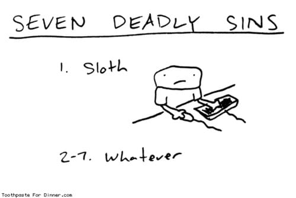

Картиночная навигация
В Снобе сделана удобная навигация по картинкам, когда контрол скроллится вместе с контентом и не надо переносить мышу.
В Снобе сделана удобная навигация по картинкам, когда контрол скроллится вместе с контентом и не надо переносить мышу.
Нашел недавно клевый блог про архитектуру и не только. Бонус.

Круто снято как. Или вот про халфпайп.
Музыка лет.
I felt only night within me and it was then that I conceived the new art, which I called Suprematism. — Malevich.
Клевая реклама масла или какого-то его заменителя что-ли :)

Очень клевое кино. Наверное лучшая роль у Шона Пенна. А посоветуйте с ним чего-нить еще посмотреть? :)

Очень клевая тема. Вот этот вот вид сзади вообще отпад. Интерьерчик тоже вполне себе.